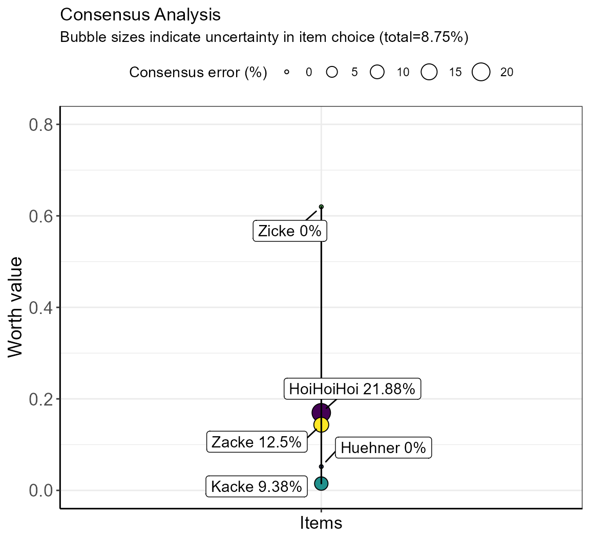

vignettes/simsalRbim_worth_evaluation.Rmd
simsalRbim_worth_evaluation.RmdWhen simulating raninkgs and ratings with unknown values it is vital to estimate measores of fit. We provide two measures for doing this: the consensus error and the intrasnsitivy ratio.
The ‘consensus error’ (CE) indicates the percent of (dis)agreement in preference within a given item pairing between individuals. If all indivuduals agree on a given item, the CE is zero. If individuals disagree, there is no consensus. Therefore, we provide a measure for the amount of disagreement.
The bimeval function compares the preferences of each subject and calculates the mean consensus error. Because this can be a bit abstract, we provide an example below.
In our ZickeZacke dataset, four individuals have rated all items, except ‘HoiHoiHoi’, which was rated by only 3 individuals (“eins”, “zwei”, “vier”). Moreover, those individuals that have rated ‘HoiHoiHoi’ were not in total agreement whether or not ‘HoiHoiHoi’ was preferred in binary comparisons over other items. The amount of disagreement is termed consensus error, with a consensus error of 0% meaning all individuals agree on a rank position and a consensus error of 100% meaning all individuals disagree. Let’s say, we want to assess the consensus error of the newly entered ‘HoiHoiHoi’ item in the ZickeZacke dataset. For this, we consider all item pairings that include ‘HoiHoiHoi’.
The table below provides the quantities (e.g., amount drunk) for items (options) A and B if available, and the result of the preference in relation to quantity A, i.e., 1 (preferred item A), 0 (tie), -1 (prefered item B). Item pairings that are not provided in the data are filled in as ties (note, that the quantities are zero in these cases, while those ties that already occurred in the original data still show quantities).
| subjectID | optionA | optionB | quantityA | quantityB | result | |
|---|---|---|---|---|---|---|
| 31 | eins | Huehner | HoiHoiHoi | 0 | 0 | 0 |
| 32 | zwei | Huehner | HoiHoiHoi | 0 | 0 | 0 |
| 33 | drei | Huehner | HoiHoiHoi | 0 | 0 | 0 |
| 34 | vier | Huehner | HoiHoiHoi | 0 | 0 | 0 |
| 28 | eins | Kacke | HoiHoiHoi | 40 | 50 | -1 |
| 29 | zwei | Kacke | HoiHoiHoi | 10 | 30 | -1 |
| 30 | vier | Kacke | HoiHoiHoi | 66 | 66 | 0 |
| 35 | drei | Kacke | HoiHoiHoi | 0 | 0 | 0 |
| 36 | eins | Zicke | HoiHoiHoi | 0 | 0 | 0 |
| 37 | zwei | Zicke | HoiHoiHoi | 0 | 0 | 0 |
| 38 | drei | Zicke | HoiHoiHoi | 0 | 0 | 0 |
| 39 | vier | Zicke | HoiHoiHoi | 0 | 0 | 0 |
| 25 | eins | Zacke | HoiHoiHoi | 40 | 50 | -1 |
| 26 | zwei | Zacke | HoiHoiHoi | 10 | 30 | -1 |
| 27 | vier | Zacke | HoiHoiHoi | 66 | 15 | 1 |
| 40 | drei | Zacke | HoiHoiHoi | 0 | 0 | 0 |
After filling in missing item combinations, for “Zacke” vs “HoiHoiHoi” our example above shows that from the four subjects only one (‘vier’) preferred the item ‘Zacke’ over the item ‘HoiHoiHoi’, indicated by result = 1. The other subjects preferred ‘HoiHoiHoi’ over ‘Zacke’, result = -1. This is converted into percentages, so that 25% of the total subjects preferred option A (‘Zacke’) and 75% option B (‘HoiHoiHoi’).
This calculation is applied to all item pairings in the dataset, resulting in the following table. With the ‘HoiHoiHoi’ item all item combinations are tested, resulting in 4 test combinations. Further, missing subjects are filled as ties. Since subjectID = ‘drei’ is missing for the test combinations ‘Zacke’ vs ‘HoiHoiHoi’ and ‘Zicke’ vs ‘HoiHoiHoi’, two ties are introduced. In total, this results in a 4 subjects x 4 item combinations table.
| test | option A (%) | option B (%) |
|---|---|---|
| HuehnerHoiHoiHoi | 0 | 0 |
| HuehnerHoiHoiHoi | 0 | 0 |
| HuehnerHoiHoiHoi | 0 | 0 |
| HuehnerHoiHoiHoi | 0 | 0 |
| KackeHoiHoiHoi | 0 | 100 |
| KackeHoiHoiHoi | 0 | 100 |
| KackeHoiHoiHoi | 0 | 0 |
| KackeHoiHoiHoi | 0 | 0 |
| ZickeHoiHoiHoi | 0 | 0 |
| ZickeHoiHoiHoi | 0 | 0 |
| ZickeHoiHoiHoi | 0 | 0 |
| ZickeHoiHoiHoi | 0 | 0 |
| ZackeHoiHoiHoi | 25 | 75 |
| ZackeHoiHoiHoi | 25 | 75 |
| ZackeHoiHoiHoi | 25 | 75 |
| ZackeHoiHoiHoi | 0 | 0 |
In the example ‘Kacke’ vs ‘HoiHoiHoi’, 100% of the subjects preferred option A (‘Huehner’), etc.
The ‘consensus error’ (CE) indicates the percent of (dis)agreement in preference within a given item pairing.
We set the threshold for deciding whether option A or B is preferred to 50% (default setting) and calculate the deviation of the smallest percentage from it (deviation = delta). (Note: the threshold can be changed in the bimpre functions using the function objects deviation and/or minQuantity).
The following pseudocode illustrates how the deviation delta was calculated.
# Pseudococde - deviation calculation
for(i in 1:item_combinations){ # e.g., ZackeHoiHoiHoi
if( item[i, "option A" ] > item[i, "option B" ] ){
delta <- (50 - item[i, "option B" ])
}else{
delta <- (50 - item[i, "option A" ])
}
}The delta is averaged, standardized, and subtracted from 50%, resulting in the consensus error (CE in %):
\[\begin{align*} CE = 50-(\sum_{i=1}^n delta_i/n)/50*100\\ \end{align*}\]
The mean delta of all ‘HoiHoiHoi’ items is 9.38%:
((50+50+50+50) + (50+50+50+50)+ (50+50+50+50) + (25+25+25+50))/16 = 725/16 = 45.31% deviation.
Then we calculate 50%-45.31%=4.69% deviation. This is standardized to 50, resulting in a CE of 4.69%/50*100=9.38% which is also shown in the following plot.
Therefore, the item ‘HoiHoiHoi’ shows a consensus error of 9.38% indicating that 9.38% of test subjects disagreed on the positioning of the item. This is also displayed in the corresponding plot of the bimeval function.
